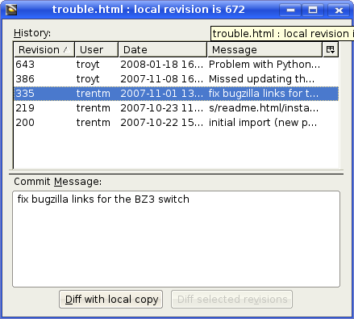
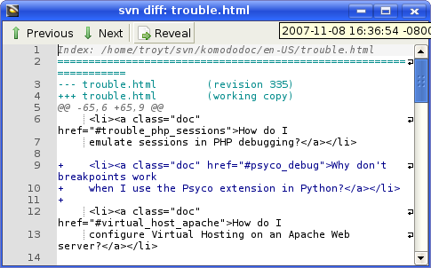
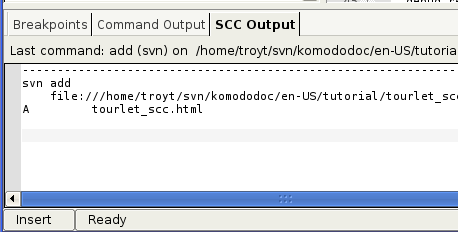

Feature Showcase: Using Source Code Control
Komodo has integration features for CVS, Perforce, and Subversion. This feature showcase uses Subversion as the example.

Open the Preferences to
check the Subversion
configuration. If the svn executable is in your PATH, you
should not have to change anything.

You can right click on a file in a project for a context menu with
some common SCC commands...
... or use the buttons in the SCC toolbar.

The History button will show a list of file revisions.

Clicking "Diff with local copy" in the History dialog box will
show the differences between the selected revision and the current
local copy. Clicking the Diff button will show
the differences between the file in the current editor tab and the
last revision.

The output of all SCC commands is shown in the Notifications tab in the
bottom pane.